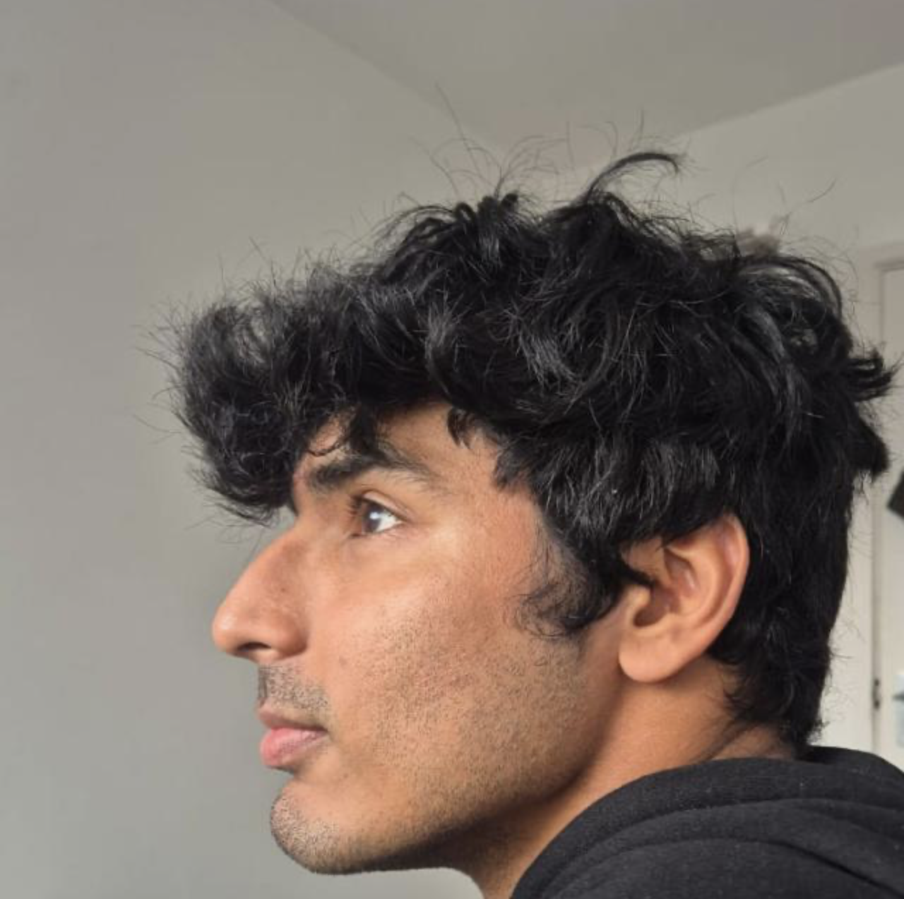

Aditya Kapoor |
|
|
TL;DR: I am an ELLIS PhD student at the University of Manchester and TU Darmstadt, researching multi-agent systems. My work focuses on building agents capable of effective communication and collaboration by drawing on interdisciplinary insights from information theory, cognitive science, and robotics. I am broadly interested in all facets of multi-agent systems. Show Full Bio & Research StatementI am an ELLIS PhD student jointly at the University of Manchester and TU Darmstadt, where I am advised by Omar Rivasplata, Samuel Kaski and Jan Peters. My research intersects multi-agent systems, reinforcement learning and foundation models with a particular focus on building agents capable of effective communication and collaboration. Prior to my PhD, I was a predoctoral researcher at Tata Consultancy Services Research & Innovation in Mumbai, working with Dr. Mayank Baranwal and Dr. Harshad Khadilkar. I also briefly worked with Dr. Vighnesh Vatsal and Dr. Jay Gubbi in TCS Bangalore. I completed my Bachelor of Engineering in Computer Science from BITS Pilani, Goa. My research is fundamentally centered on multi-agent systems (MAS). I am broadly interested in all facets of MAS, from foundational theory to practical application. My approach is highly interdisciplinary, drawing insights and tools from a wide array of fields to build more capable, coordinated, and intelligent agents. Key areas I borrow from include:
Feel free to get in touch if you are interested in working with me via email at aditya [dot] kapoor [at] postgrad [dot] manchester [dot] ac [dot] uk. This information was last updated in October 2025. CV | Google Scholar | GitHub | LinkedIn | Twitter |

|